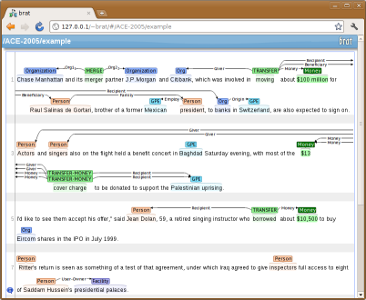

Learn more:
- What is it?
- Examples
- Features
- Browser support
- ...
Runs in your browser: no installation required
Intuitive annotation visualization and editing
...
Manage your own annotation effort
Easy to set up with detailed instructions (really?)
...
brat rapid annotation tool
online environment for collaborative text annotation